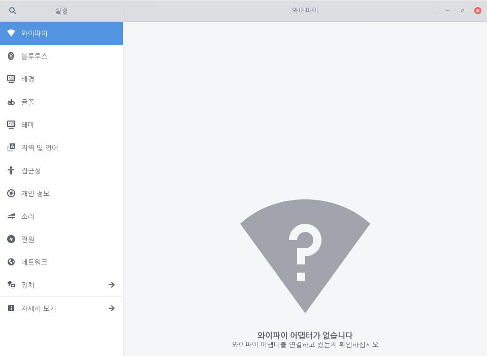
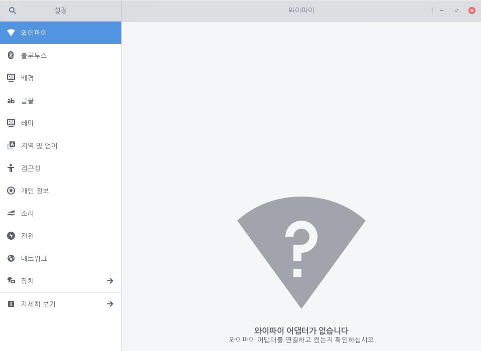
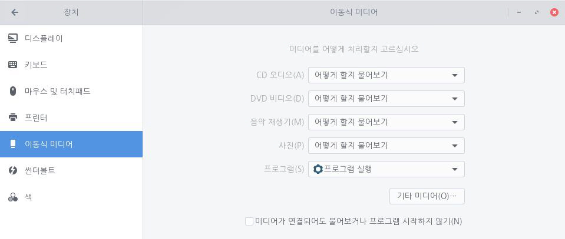
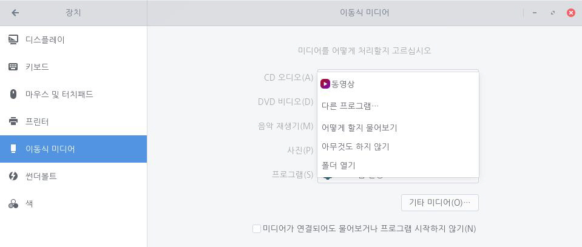

장치, 디스크 또는 미디어 카드가 연결되었을 때 애플리케이션을 자동으로 실행하도록 설정할 수 있습니다. 예를 들어 디지털 카메라를 연결했을 때 사진 관리자를 자동으로 실행시킬 수 있습니다. 이 경우 사용자가 수행하려는 작업을 묻는 메시지가 표시되거나 아무런 기능이 실행되지 않습니다. 다음 단계를 수행하여 이동식 미디어를 설정합니다.1. 좌측 하단의 [시작]아이콘을 클릭하고 검색 창에 "설정"을 입력한 후 [설정] 애플리케이션을 실행합니다.
 2. [설정] 애플리케이션 사이드 바에서 [장치]를 클릭한 후 [이동식 미디어]를 클릭합니다.
2. [설정] 애플리케이션 사이드 바에서 [장치]를 클릭한 후 [이동식 미디어]를 클릭합니다.
3. 원하는 장치 또는 미디어 유형을 찾아 원하는 동작을 설정할 수 있습니다. 설정 가능한 동작은 다음과 같습니다. 기본 설정 프로그램, 다른 프로그램, 사용자에게 어떻게 할지 물어보기, 아무 것도 하지 않음, 폴더 열기4. 원하는 장치를 찾지 못한 경우 [기타 미디어] 버튼을 클릭하여 원하는 장치를 설정할 수 있습니다.지원하는 장치 유형은 아래와 같습니다. CD 오디오, DVD 비디오, 음악 재생기, 사진, 프로그램, 오디오 DVD, 빈 블루레이 디스크, 빈 CD 디스크, 빈 DVD 디스크, 빈 HD DVD 디스크, 전자책 읽기 프로그램, 사진 CD, 소프트웨어, 블루레이 비디오 디스크, HD DVD 비디오 디스크, 수퍼 비디오 CD, 비디오 CD, Windows 프로그램